Познавательная программа “Кот ученый”
для участников детского летнего лагеря “Ден Соолук”
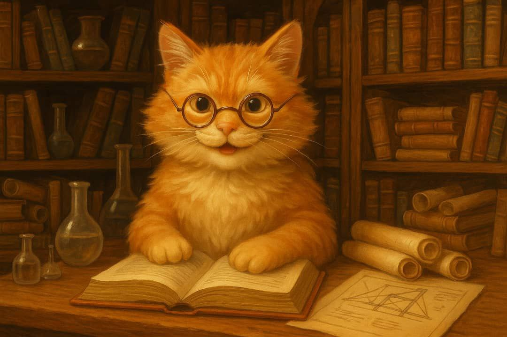Вас будут ждать:
1. Ежедневные познавательные шоу и тренинги по 1 часу в день:
Более 30 интерактивных опытов по 6 предметам! Дети не просто смотрят, а сами экспериментируют: создают, проверяют, удивляются и делятся открытиями. Каждый уносит с собой не только знания, но и сделанные своими руками модели и поделки.
Химия - 1 час
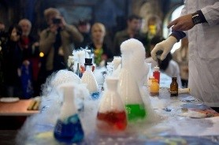Создание «вулканов» и пенящихся гейзеров. Выращивание кристаллов. Безопасные реакции, меняющие цвет, запах и форму. «Невидимые чернила» и светящиеся растворыт
Физика - 1 час
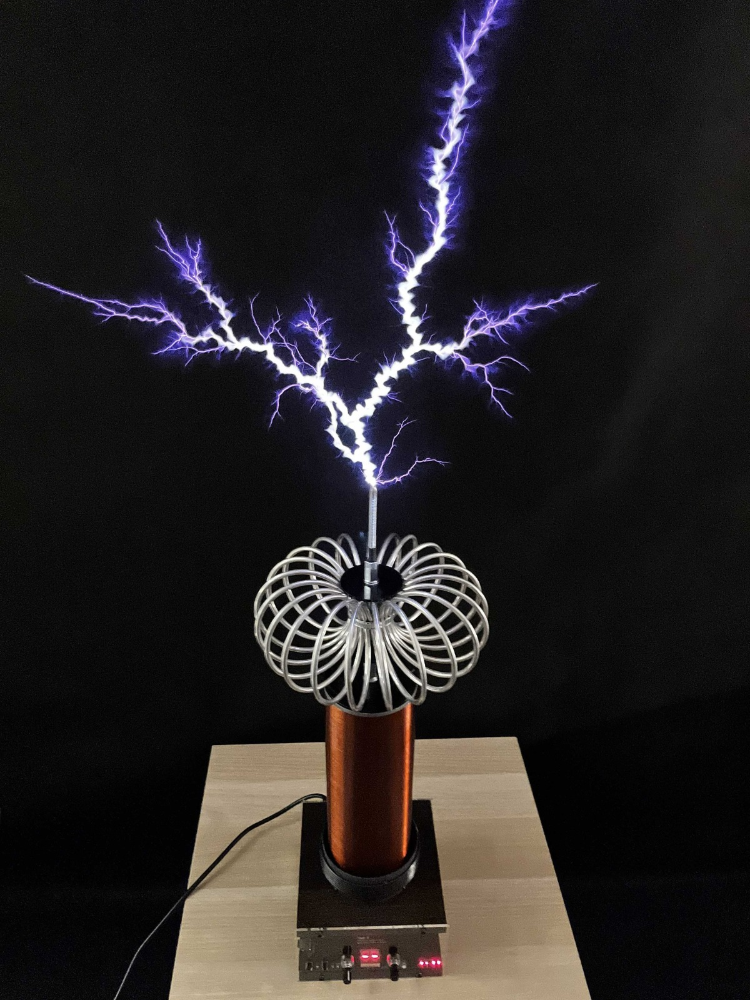Постройка мини-катапульт, ветряков и ракет. Опыт с катушкой Тесла и лазерами. Эксперименты с магнетизмом и электричеством. Создание электромагнита из обычного гвоздя
Зоология - 1 час
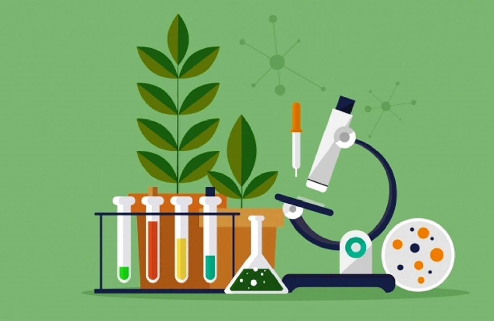Изучение строения насекомых в микроскоп. Контакт с живыми насекомыми и бабочками. Коллекционирование (муляжи, модели)
Математика - 1 час
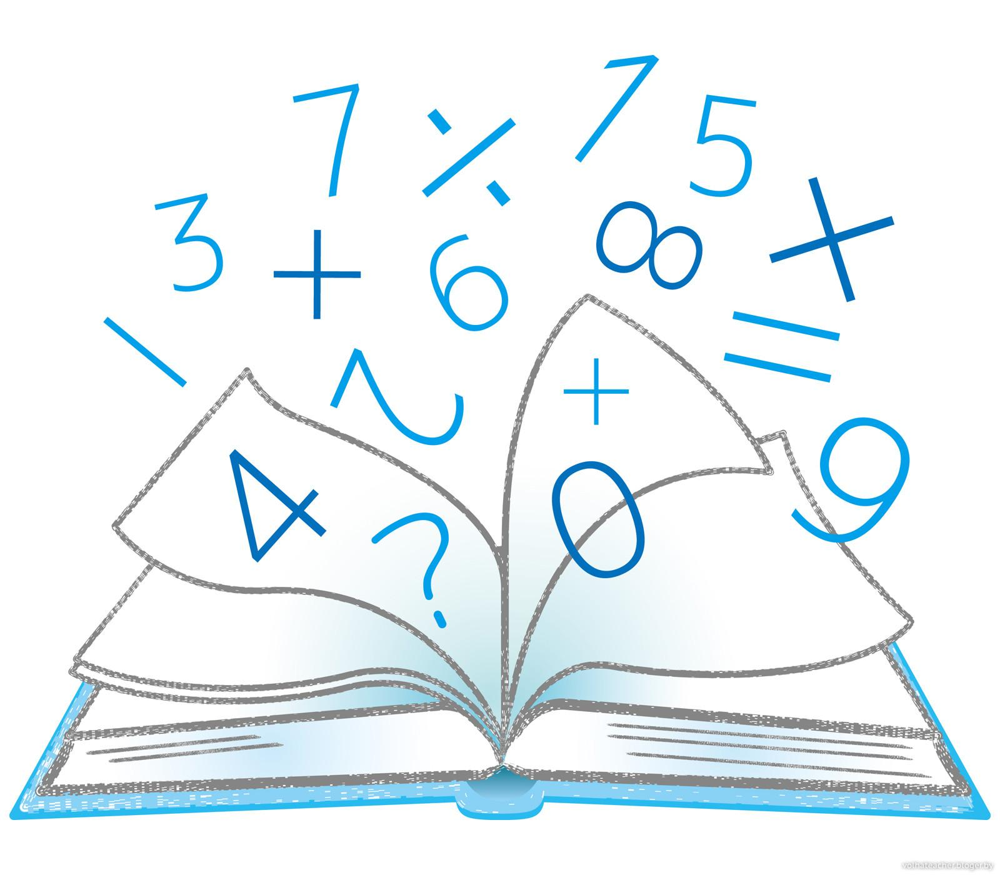Игры с числами, головоломки и шифры. Волшебные квадраты и логические задачи. Разбор повседневных задач: как считать сдачу, составлять графики
Астрономия - 1 час
Наблюдение Луны и планет в мобильном планетарии. Создание карт звёздного неба. Модель солнечной системы своими руками.
2. Познавательные и развлекательные фильмы в мобильном планетарии - ежедневно
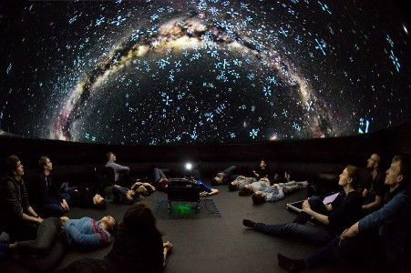- Просмотр фильмов в купольном планетарии приносит детям мощную образовательную, эмоциональную пользы.
- У детей пробуждается более сильный интерес к космосу, подводному миру, биологии…
- Развивается фантазия, пространственное мышление и ассоциативное восприятие….
Программа “Под крылом Тенгри”
- Курс обучения стрельбы из лука, арбалета и другого оружия
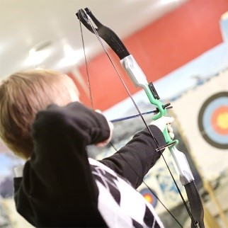- Ознакомительные занятия и практика в верховой езде.
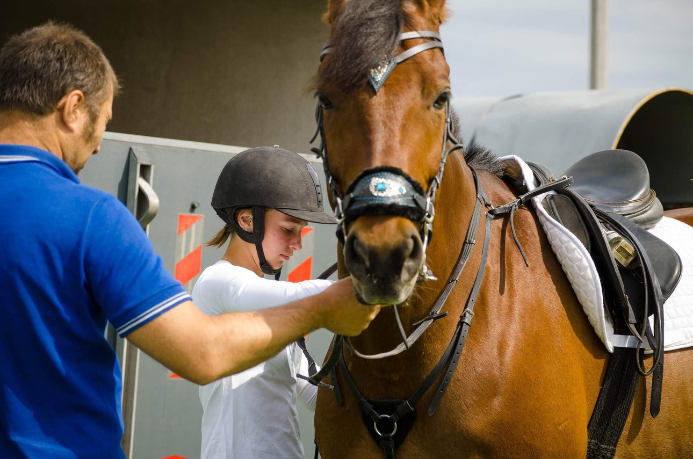- Ночевка 1-3 ночи в настоящей юрте
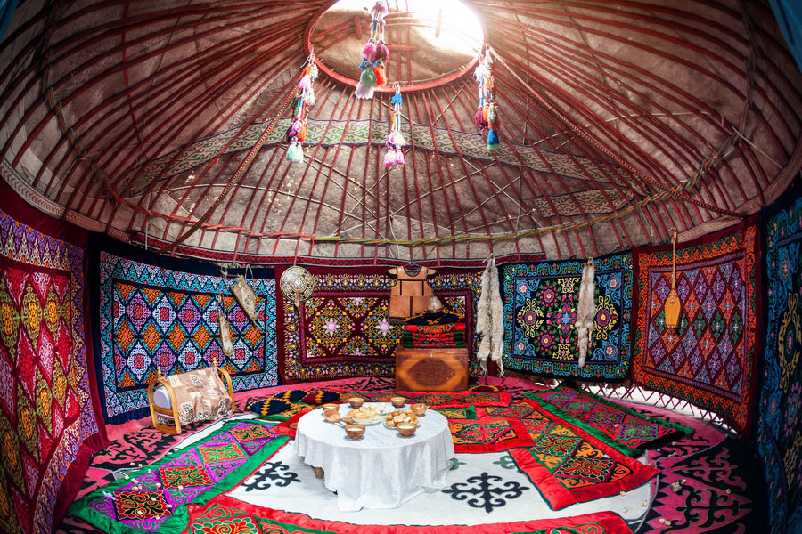 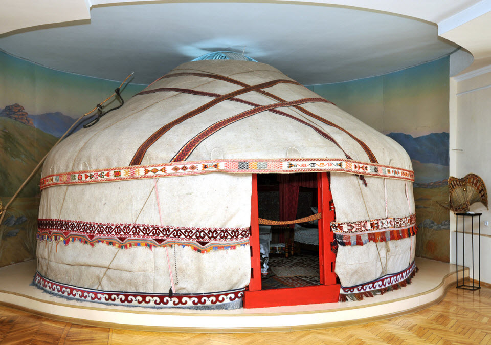Участвуя в программе “Под крылом Тенгри” Ваш ребенок:
- Познакомиться с культурой древних кочевников,
- Получит практические азы управления конем,
- Освоит стрельбу из лука и арбалета,
- 1-2 суток проживет в настоящей кыргызской юрте
В конце смены пройдут соревнования с обязательным призовыми поощрениями и подарками победителей и участников программы “Под крылом Тенгри”
3. Творческие кружки:
- Изготовление рамок и панно с бабочками и жуками -1 час
Ученики изготавливают рамки с необычными по красоте и формам экзотическими насекомыми.
- Своими работами украшать собственный дом или подарить друзьям
- Существенно дополнить экспозицию кабинета биологии своей школы.
- Открыть личный интернет магазин зарабатывая собственные деньги.
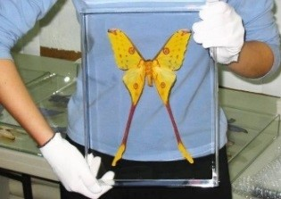 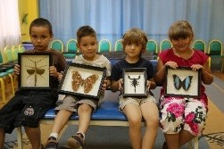- Изготовление цветных свечей горящим пламенем разных цветов - 1 час,
Ваш ребёнок получит огромное эстетическое удовольствие освоив технику безопасного изготовления свечей, горящих разноцветными огнями. Свои работы ребёнок сможет дарить как уникальные и эксклюзивные подарки, в кафе, бары и люди с огромным удовольствием приобретают такие свечи на торжества. Эти увлекательные занятия развивают творчество, усидчивость, дарит интерес и гордость за результат с пользой для будущего.
 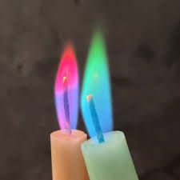
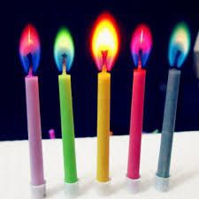
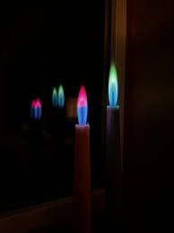
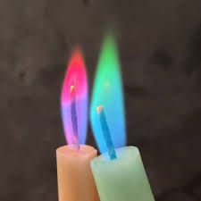
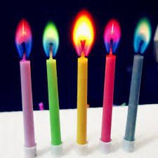
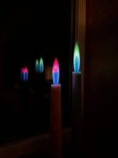
4. Ускоренное изучение одновременно двух языков ЯЗЫКОВАЯ БИЗНЕС - ПРОГРАММА - “UNIQUE ABILITIES”
- Программа позволяет без зубрёжки и домашних заданий за 6 часов занятий в неделю запоминать до 200-250 слов одновременно двух языков (кыргызский и английский).
- Увеличивает способности скорочтения более 600 слов в минуту.
- С программой “UNIQUE ABILITIES” – есть возможность отдыха в детских лагерях США.
По окончании отдыха в летнем лагере Д.С. в подарок - бесплатный курс изучения одновременно двух языков 52 часа + 1 месяц настоящего курса в подарок всем участникам программы “Под крылом Тенгри”
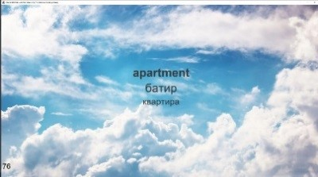